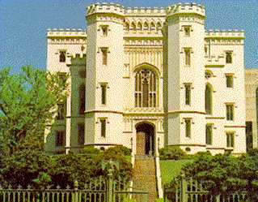

|
 The Louisiana Capital was built in 1847-1850, badly damaged by a fire during the Civil War, and reconstructed (to use a word with grimly ironic implications) in 1880-1882. Restoration work was in progress when MT went back to the river to gather material for Life on the Mississippi (1883). When he got to Baton Rouge he decided he was back in "the absolute South" -- because of both the Spanish moss on the trees and the symptoms of what MT called the "Sir Walter disease" in the culture. The reconstruction of the Capital provoked MT to this diagnosis: "Scott is probably responsible for the Capital building; for it is not conceivable that this little sham castle would ever have been built if he had not run the people mad, a couple generations ago, with his mediaeval romances. . . . It is pathetic enough, that a whitewashed castle, with turrets and things -- materials all ungenuine within and without . . . -- should ever have been built in this otherwise honorable place; but it is much more pathetic to see this architectural falsehood undergoing restoration and perpetuation in our day, when it would have been so easy to let dynamite finish what a charitable fire began." When he finds himself in King Arthur's Court, Hank Morgan's first rehearsed public performance is to blow up Merlin's tower. |